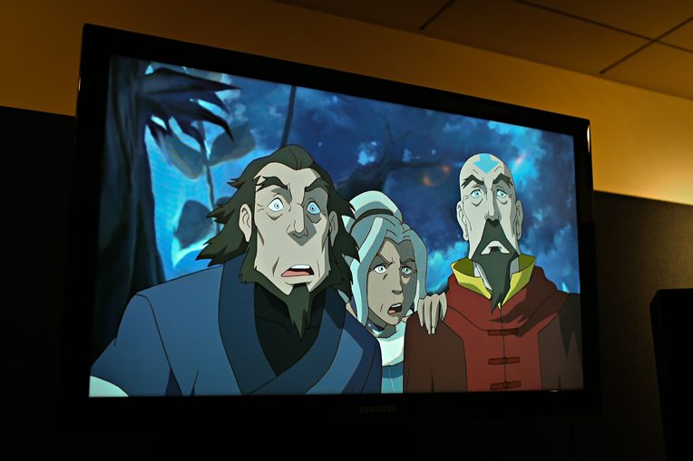
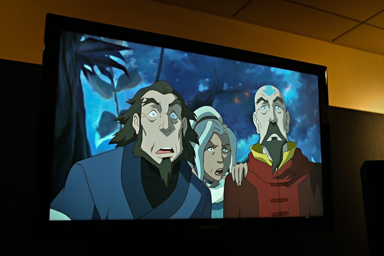

Welkom op Avatar: The Four Elements de grootste Nederlandse fansite over Avatar: De Legende van Aang en De Legende van Korra. Bekijk de nieuwste en oude afleveringen in het Engels en Nederlands. Op het forum kan je samen met andere fans gezellig praten over Avatar.
Nieuws
Comic-Con 2013
Door glkx op zondag 7 juli 2013 om 14:31
Bereid je voor op heel veel De Legende van Korra vuurwerk. Deze maand, 18 tot en met 21 juli, is de jaarlijkse Comic Con in San Diego. Nickelodeon is ook dit jaar weer van de partij. De Legende van Korra lijkt voor Nickelodeon een belangrijke rol te gaan spelen. Vrij recent is het panel voor de Comic-Con aangekondigd en zal plaatsvinden 19 juli om 20:15 (Nederlandse tijd).
Dat wij veel nieuwe informatie gaan horen en zien staat vast. De release datum van De Legende van Korra nadert volgens verschillende bronnen rap. Voorzichtig kunnen wij een release in september dit jaar vast stellen. In een persbericht van de Canadese Nickelodeon zijn de nieuwe programma's voor het komend jaar gepresenteerd; waaronder De Legende van Korra.
Uiteraard houden wij jullie hier op de hoogte van al het laatste nieuws afkomstig de Comic-Con. Voor wie niet kan wachten, zijn hier de eerste beelden uit boek 2: Geesten.

Mee praten op over het laatste Comic-Con nieuws kan in dit topic van Avatar: The Four Elements.
Dat wij veel nieuwe informatie gaan horen en zien staat vast. De release datum van De Legende van Korra nadert volgens verschillende bronnen rap. Voorzichtig kunnen wij een release in september dit jaar vast stellen. In een persbericht van de Canadese Nickelodeon zijn de nieuwe programma's voor het komend jaar gepresenteerd; waaronder De Legende van Korra.
Uiteraard houden wij jullie hier op de hoogte van al het laatste nieuws afkomstig de Comic-Con. Voor wie niet kan wachten, zijn hier de eerste beelden uit boek 2: Geesten.

Mee praten op over het laatste Comic-Con nieuws kan in dit topic van Avatar: The Four Elements.
Boek 2 in april, of toch september?
Door glkx op dinsdag 2 april 2013 om 22:22
We hebben eindelijk weer wat nieuws/geruchten te melden. Vers van de pers! Gaat de eerste aflevering van boek 2 De Legende van Korra in april uitgezonden worden? Volgens Janet Varney (stemacteur) wel. Het gerucht ging al langer rond op het internet. Dit was wel voor het eerst dat iemand uit het team van De Legende van Korra het bevestigde. Helaas verdween het bericht weer snel van Twitter. Gevolgd door een excuses en dat we lekker mogen wachten op meer nieuws van Nickelodeon.
Hoewel ze in het Verenigd Koninkrijk nog op boek 1 wachten, hebben ze daar heel goed nieuws gekregen. Daar kunnen ze eindelijk in mei gaan genieten van boek 1. Hoe is dit nieuws belangrijk voor ons? Wij zitten namelijk al lang te wachten op boek 2... Nu komt het; in een e-mail wisseling tussen Nickelodeon UK en een Britse avatar fansite werd verwezen naar boek 2. Nickelodeon UK hoopt boek 2 van De Legende van Korra kort na de release in de VS uitzenden. Als in de UK boek 1 en 2 kort na elkaar uitgezonden zullen worden, kan dat beteken dat we na de zomervakantie in september boek 2 kunnen verwachten. Het blijven echter geruchten en speculeren.
Zijn we wat opgeschoten..? Ik blijf stiekem op april hopen September lijkt echter een logischere release periode te zijn, zo net na de zomervakantie. Wat denken/hopen jullie?
Als er meer nieuws/geruchten is laten wij dat direct weten!
Bron: Avatar The Last Airbender Online
Hoewel ze in het Verenigd Koninkrijk nog op boek 1 wachten, hebben ze daar heel goed nieuws gekregen. Daar kunnen ze eindelijk in mei gaan genieten van boek 1. Hoe is dit nieuws belangrijk voor ons? Wij zitten namelijk al lang te wachten op boek 2... Nu komt het; in een e-mail wisseling tussen Nickelodeon UK en een Britse avatar fansite werd verwezen naar boek 2. Nickelodeon UK hoopt boek 2 van De Legende van Korra kort na de release in de VS uitzenden. Als in de UK boek 1 en 2 kort na elkaar uitgezonden zullen worden, kan dat beteken dat we na de zomervakantie in september boek 2 kunnen verwachten. Het blijven echter geruchten en speculeren.
Zijn we wat opgeschoten..? Ik blijf stiekem op april hopen September lijkt echter een logischere release periode te zijn, zo net na de zomervakantie. Wat denken/hopen jullie?
Als er meer nieuws/geruchten is laten wij dat direct weten!
Nickelodeon UK schreef:
Hi Morgan! Yes, we’ve got some good news for you – Avatar: The Legend of Korra starts on Nickelodeon here in the UK in May.
We’re really sorry for the delay, but we hope you’ll agree that the series was worth waiting for! We’ll be showing Book 1 to begin with, and although it’s a bit too soon to talk about Book 2, we hope that we’ll be able to show it fairly close to its US airdates. Can’t promise – we’ll have to see what happens. Fingers crossed!
I hope this answers your question, and that you enjoy the show.
All the best,
Ant
Nickelodeon!
We’re really sorry for the delay, but we hope you’ll agree that the series was worth waiting for! We’ll be showing Book 1 to begin with, and although it’s a bit too soon to talk about Book 2, we hope that we’ll be able to show it fairly close to its US airdates. Can’t promise – we’ll have to see what happens. Fingers crossed!
I hope this answers your question, and that you enjoy the show.
All the best,
Ant
Nickelodeon!
Bron: Avatar The Last Airbender Online
Een leuk 2013 gewenst!
Door glkx op woensdag 2 januari 2013 om 18:16
Een iets verlaat bericht, maar niet minder gemeend. Ik wil graag alle leden en bezoekers een leuk en gezond 2013 wensen. Ik hoop ook dat jullie een mooie jaarwisseling hebben gehad ")
Wat 2013 allemaal gaat brengen voor Avatar: The Four Elements is nog een mystery. De website draait met de nieuwe versie van het layout al enkele maanden erg fijn. Het aantal leden is geëxplodeerd. Daarnaast staan bijna alle afleveringen van Avatar: De Legende van Aang weer online in het Nederlands (met hulp van Akuro). Niets houdt ons nog tegen! Na ja, die vervelende technische problemen dan (moet ik nog steeds naar gaan kijken *shame* ).
Wat betreft Korra... Ik hoop dat het tweede boek dit jaar nog uit gaat komen. Dat wordt gespannen afwachten
Wat 2013 allemaal gaat brengen voor Avatar: The Four Elements is nog een mystery. De website draait met de nieuwe versie van het layout al enkele maanden erg fijn. Het aantal leden is geëxplodeerd. Daarnaast staan bijna alle afleveringen van Avatar: De Legende van Aang weer online in het Nederlands (met hulp van Akuro). Niets houdt ons nog tegen! Na ja, die vervelende technische problemen dan (moet ik nog steeds naar gaan kijken *shame* ).
Wat betreft Korra... Ik hoop dat het tweede boek dit jaar nog uit gaat komen. Dat wordt gespannen afwachten
2 september eerste aflevering
Door glkx op maandag 16 juli 2012 om 15:06
Zet 2 september 9:55 in je agenda. Of het per ongeluk is gegaan is niet duidelijk. Maar op de website van Nickelodeon Nederland is de pagina van 'De Legende van Korra' verschenen met daarop onder andere de uitzendtijden van de eerste drie of vier afleveringen.
De eerste aflevering zal uitgezonden worden op 2 september om 9:55. Waarschijnlijk gaat dat om de twee luik: 'Welkom in Republiek Stad' en 'Een Blad in de Wind.' De derde aflevering volgt een week later op 9 september om 9:55. Elke zaterdag er voor zal een herhaling uitgezonden worden van de week ervoor ook om 9:55.
Uitzendtijden
2 september, 9:55 - Welkom in Republiek Stad & Een Blad in de Wind
8 september, 9:55 - Welkom in Republiek Stad & Een Blad in de Wind (herhaling)
9 september, 9:55 - De Openbaring
Of deze tijden correct zijn zal de toekomst uitwijzen. Naast deze pagina is Nickelodeon ook vrij recent begonnen met een reclame voor Boek 2 van 'De Legende van Aang'. In deze reclame wordt ook verwezen naar 'De Legende van Korra.' Wat zeker is, is dat we niet heel lang meer zullen hoeven te wachten op 'De Legende van Korra!'
Update: Volgens een reactie op Youtube door Nickelodeon Nederland zal 'De Legende van Korra' eenmaal per week uitgezonden worden op zondag, beginnend op 2 september. Uitzendtijden in dit bericht zijn aangepast aan de hand van deze reactie.
Bron: Nickelodeon
Tipgever: Dylan
De eerste aflevering zal uitgezonden worden op 2 september om 9:55. Waarschijnlijk gaat dat om de twee luik: 'Welkom in Republiek Stad' en 'Een Blad in de Wind.' De derde aflevering volgt een week later op 9 september om 9:55. Elke zaterdag er voor zal een herhaling uitgezonden worden van de week ervoor ook om 9:55.
Uitzendtijden
2 september, 9:55 - Welkom in Republiek Stad & Een Blad in de Wind
8 september, 9:55 - Welkom in Republiek Stad & Een Blad in de Wind (herhaling)
9 september, 9:55 - De Openbaring
Of deze tijden correct zijn zal de toekomst uitwijzen. Naast deze pagina is Nickelodeon ook vrij recent begonnen met een reclame voor Boek 2 van 'De Legende van Aang'. In deze reclame wordt ook verwezen naar 'De Legende van Korra.' Wat zeker is, is dat we niet heel lang meer zullen hoeven te wachten op 'De Legende van Korra!'
Update: Volgens een reactie op Youtube door Nickelodeon Nederland zal 'De Legende van Korra' eenmaal per week uitgezonden worden op zondag, beginnend op 2 september. Uitzendtijden in dit bericht zijn aangepast aan de hand van deze reactie.
NickelodeonNED schreef:
De Legende van Korra zal vanaf 2 september elke zondag worden uitgezonden om 09.55 uur op Nickelodeon. Herhalingen zullen te zien zijn op zaterdag om 09.55 uur op Nickelodeon!
Bron: Nickelodeon
Tipgever: Dylan
4000 leden!
Door glkx op zondag 15 juli 2012 om 12:35
Avatar: The Four Elements heeft het aantal van 4000 leden deze week bereikt. We zijn erg blij dat we zoveel leden in de afgelopen 5 jaar hebben kunnen verzamelen op Avatar: The Four Elements. Graag willen we iedereen bedanken die zich hebben geregistreerd.
Spread the word... 5000 leden is binnen handbereik
Spread the word... 5000 leden is binnen handbereik
Populaire afleveringen

|
De Valstrik De Legende van Korra 15 keer bekeken |

|
De Aarde Koningin De Legende van Korra 13 keer bekeken |

|
Harmonische Convergentie De Legende van Korra 10 keer bekeken |

|
De Vuursturende Meesters De Legende van Aang 9 keer bekeken |

|
Burgeroorlog (Deel 1) De Legende van Korra 9 keer bekeken |
Forum
|
Live-Action Avatar: The Last Airbender Gereageerd door: Momoness |
|
Deel een serie hier! Gereageerd door: Momoness |
|
Avatar is terug met Avatar Studios Gereageerd door: Momoness |
|
Begin maar met kneden! Gereageerd door: Zukofan |
|
Michale en Bryan stappen uit Netflix serie Gereageerd door: Zukofan |
© 2021 Avatar: The Four Elements (3.6). Alle rechten voorbehouden. Contact Privacy Voorwaarden
"Avatar: The Last Airbender" is eigendom van Nickelodeon.
"Avatar: The Last Airbender" is eigendom van Nickelodeon.